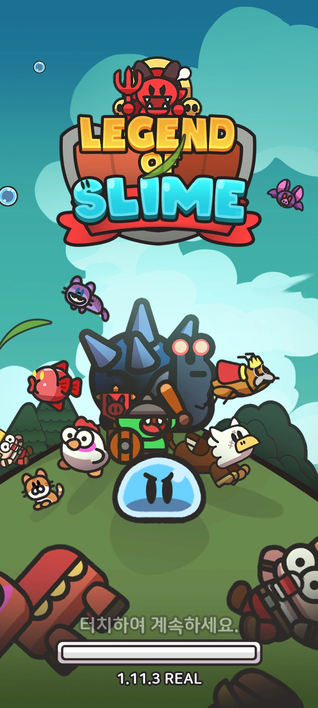

레전드 오브 슬라임 / 로드컴플릿
개발 범위와 일정, 출시 준비를 조율했습니다.
론칭 이후에는 업데이트와 라이브 이슈를 담당했습니다.
~ / 프로젝트 참여 기간
개발부터 출시, 라이브 운영까지
단계를 선택하면 해당 경험으로 이동합니다.
개발 단계
BUILD 범위와 일정
론칭 스펙과 기능별 우선순위를 확인하고, 팀별 업무 범위와 리소스를 보며 일정을 산정했습니다.
담당자와 일감을 등록한 뒤 WBS와 협업 도구에서 개발 진행 상황을 확인했습니다.
업무 범위가 모호한 구간에서는 일감이 누락됐습니다.
이슈와 일감을 각 팀장에게 먼저 배분하고, 담당자를 지정해 달라고 요청했습니다.
해야 할 일과 맡을 사람을 함께 확인하며 일정을 맞췄습니다.
- 기능/범위
- 론칭 스펙과 먼저 완성할 기능 확인
- 담당/리소스
- 팀별 업무 범위와 담당자 확인
- 일정/진행
- WBS와 태스크를 기준으로 개발 진행 조율
출시가 가까워지면서 개발 진행뿐 아니라 남은 이슈와 출시 후 대응 준비도 확인해야 했습니다.
출시 준비
PREPARE 이슈와 대응 준비
출시 절차를 함께 확인할 수 있도록 다른 게임의 출시 직전 개발 환경을 조사해 자료를 공유했습니다.
개발실의 목표와 방향도 주기적으로 전달했습니다.
- 남아 있는 이슈게임 출시를 위한 미해결 이슈를 파악하고 조치했습니다.
- 라이브 이슈 시나리오출시 후 발생 가능한 상황을 가정하고 대응 방안을 논의했습니다.
- 담당자와 공유 절차이슈별 주요 담당자를 지정하고 이슈를 공유할 절차를 정리했습니다.
출시 가능 여부와 함께, 문제가 생겼을 때 누가 확인하고 어떻게 공유할지도 준비했습니다.
출시 준비에서 실제 운영으로
LAUNCH
개발 스펙을 완성하는 일에서, 실제 서비스의 이슈와 업데이트를 확인하는 일로 관리 대상이 넓어졌습니다.
라이브 운영
OPERATE 라이브와 후속 개발
주간 업데이트와 패치를 준비하며 개발/운영/사업팀과 협업했습니다.
형상/브랜치 관리 전략을 수립하고, 대규모 업데이트의 패치 노트와 공지사항도 준비했습니다.
라이브 이슈가 발생하면 예정된 개발 일정에도 차질이 생겼습니다.
이슈별 담당자와 공유 절차를 정리하면서, 새 기능 개발과 서비스 대응을 함께 확인해야 했습니다.
먼저 완성할 기능을 보는 것에 더해, 먼저 대응할 이슈와 그에 따른 후속 작업까지 살폈습니다.

PM 관점 / 다음 개발 판단
LEARN 출시 이후까지 보는 일정
개발할 범위와 담당자가 모호하면 누락된 일을 다시 확인해야 했습니다.
라이브 이슈가 예정된 개발 일정을 바꾸는 경험도 했습니다.
이후 개발 일정을 잡을 때는 출시 후 대응할 담당자와 공유 절차도 함께 확인하게 됐습니다.
BUILD의 범위/담당/일정 다시 보기